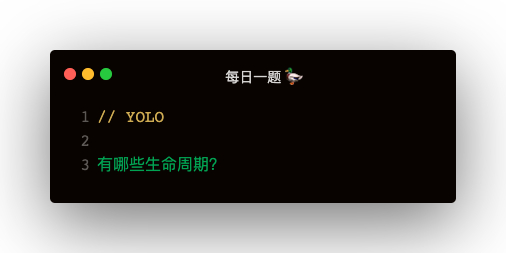

解答
老的生命周期
- 初始化：constructor
- 装载：componentWillMount，render，componentDidMount
- 更新：componentWillReceiveProps，shouldComponentUpdate，componentWillUpdate，render，componentDidUpdate
- 卸载：componentWillUnmount
新的生命周期
- 初始化：constructor
- 装载：getDerivedStateFromProps，render
- 更新：getDerivedStateFromProps，shouldComponent，render，getSnapshotBeforeUpdate，componentDidUpdate
- componentWillmount
生命周期改动
- 废除了三个 will 系生命周期：componentWillMount，componentWillReceiveProps，componentWillUpdate
- 增加了两个生命周期：getDerivedStateFromProps，getSnapshotBeforeUpdate
getDerivedStateFromProps
当初始化和更新时，组件会在 constructor 之后先走 getDerivedStateFromProps，可以在这个生命周期中返回一个json，映射为当前的state
class Child extends React.Component {
constructor (props) {
super(props);
this.state = { time: '' }
}
static getDerivedStateFromProps (nextProps) {
return {
time: nextProps.time
}
}
}
getSnapshotBeforeUpdate
在更新之前返回一个快照 snapshot，可以在 componentDidUpdate 中第三个参数获取
getSnapshotBeforeUpdate () {
return {}
}
componentDidUpdate (prevProps, prevState, snapshot) {
}
使用场景：
比如往网页头部插入元素，会导致网页往下移，此时可以用 getSnapshotBeforeUpdate 先记录更新前的 scrollTop